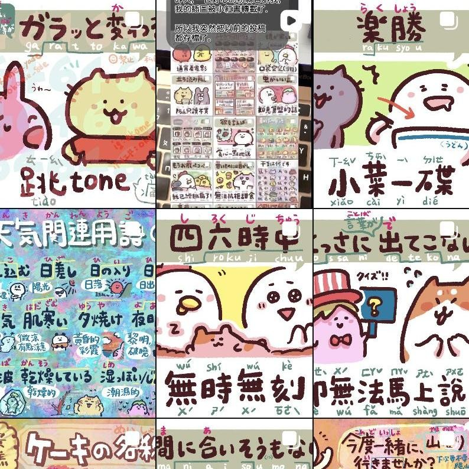
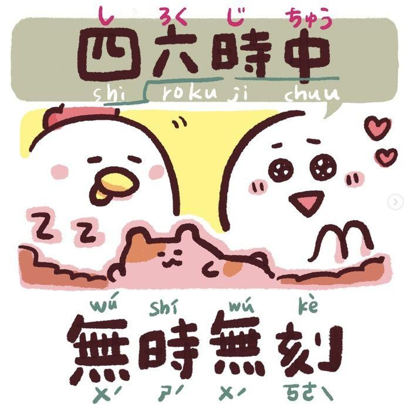
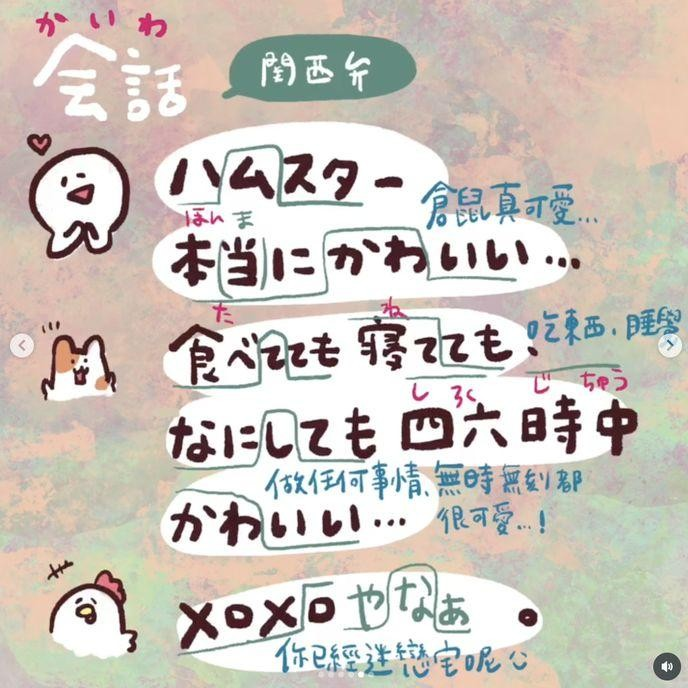
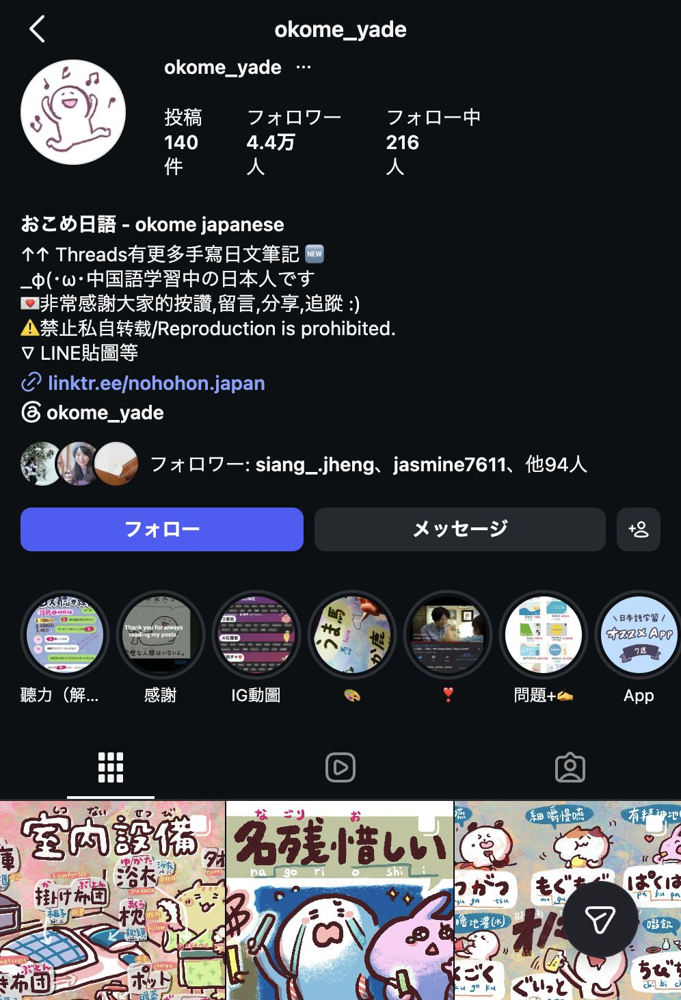

okome_yadeInstagram
View Instagram→Planning / Content Production / Posting & Operations / Community Management
- ~49,000followers (peak)
- ~44,000followers (as of Aug 2026)
- 1,000+posts created (2019–2023)
- Planned and ran an Instagram account introducing Japanese expressions through illustrations, aimed at Japanese learners in Chinese-speaking regions.
- Handled every part of production myself — planning each post, drawing the illustrations, writing example sentences, and recording audio in both standard Japanese and Kansai dialect.
- Shaped how I communicated based on comments and follower reactions, trying formats like dialogue-style posts and voice clips, and carried what worked into the next post.
- Ran the account end-to-end — planning, posting, and community engagement — for about three years.